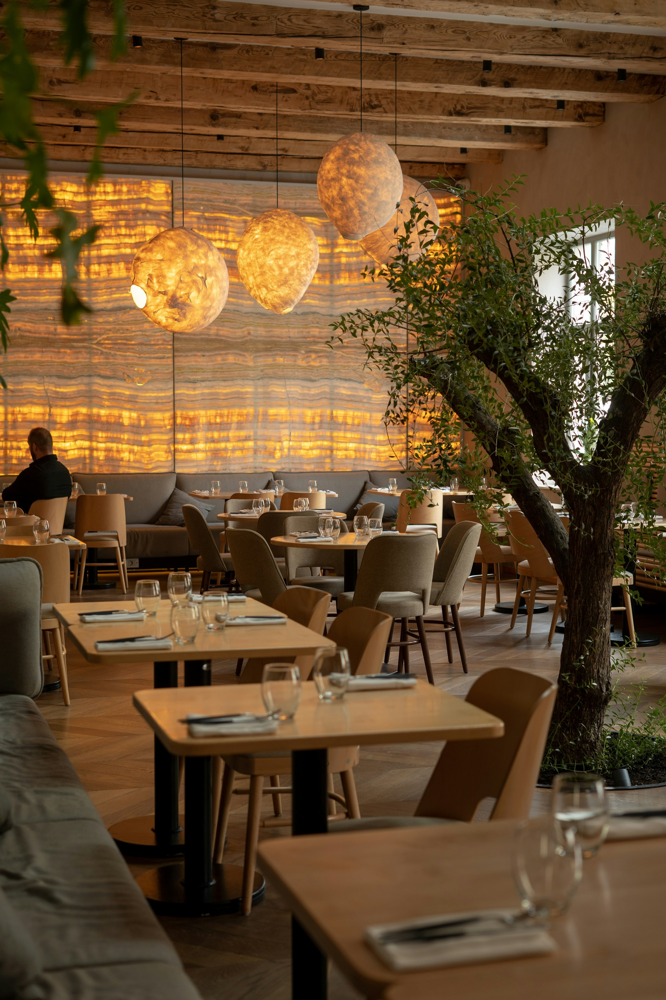

BIFROST.Site institucional
Post novo no feed
O site do seu restaurante tem isto?
Cardápio, horário, botão de pedido e fotos: os 4 itens que não podem faltar.
Veja o post no perfil →

Cardápio, horário, botão de pedido e fotos: os 4 itens que não podem faltar.